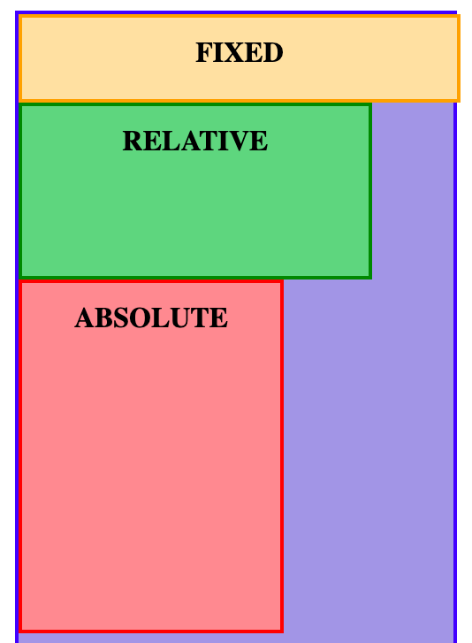
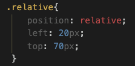
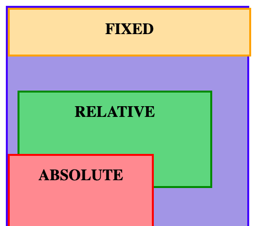
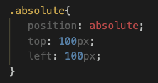
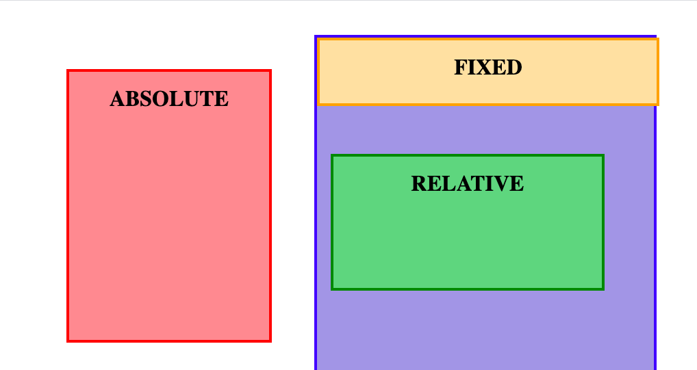
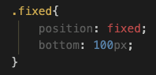
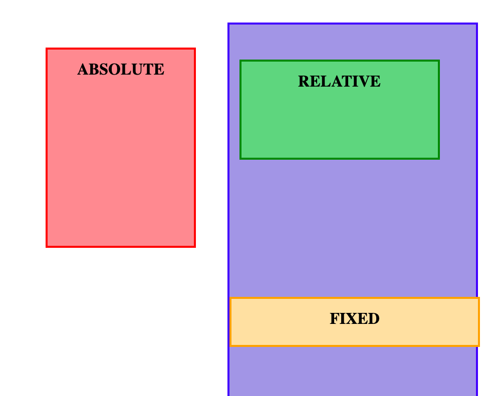
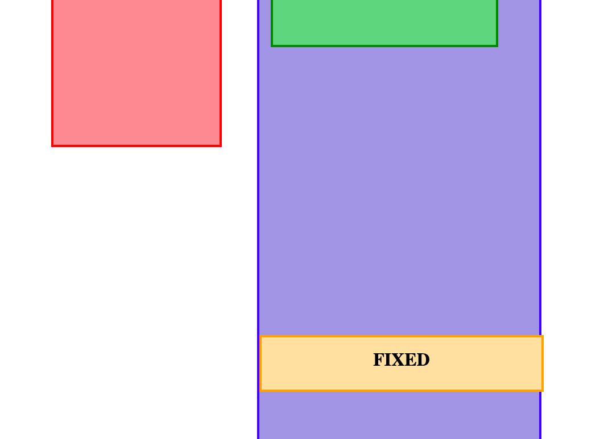

This blog will cover what relative, absolute and fixed positioning are, and will include an example to illutrate how they can be used on a page to position elements.
The setup I'll be using to demonstrate these properties is shown below, and has one parent element that is acting as a container, which is blue. Then we have three child elements, each a div that I will used to demonstrate how each positiong property works.
First, lets cover relative positioning. This is done in CSS with the code: position: relative;
This line on its own will not move the element, as any element with position relative stays in its relative place in the flow of the document. In our case this means that becasue the "relative" div (green) is located between the "fixed" (orange) and "absolute" (red) divs in the HTML, it will remain in that original document's flow.
However, now that the element is positioned relatively, it allows us to specifically locate that element whereever we want to, relative to its original position in the HTML. We can use the "positional" properties: top, left, bottom, right, and z-index (z-index not covered in this blog) to achieve this movement, as shown in the code below:
As you can see, the effect this code has is to move the relative div 20 pixels from the left , and 70 pixels from the top. Note that these measurements are relative to its original position, and so it moves 20 pixels from the parent div's edge, and 70 pixels from the "fixed" div's edge.
Next up is absolute position. This is done in CSS with the code: position: absolute;
Unlike a relatively positioned element, an element with position: absolute is removed from the flow of the document, ie, it is no longer bound by its parent element, and instead can be adjusted relative to the document itself. Once given a the position: absolute property, we can then use the same positional properties to move the element around in the document. In order to demonstrate this, I'll use the following code:
As you can see, this has a dramatic affect due to the absolute element no longer being bound by the blue parent element, and is instead being positioned relative to the main document. Specifically, the element has now been moved to 100px from the left of the window/document and 100px from the top of the window/document. Note, if we wanted it to remain within the parent element and position it absolutely within that element, we could set the parent element to position: relative.
Fixed postion is done in CSS with the code: postion: fixed;
Fixed position elements behave similarly to absolutely positioned elements; they are removed from the flow of the document and are positioned relative to the document/window. Once an element has the position: fixed property applied, the same positional properties can be used to move the element around the document, with one difference: the element is now fixed to the page, and is unaffected by scrolling - meaning that no matter how far you scroll, that element will remain in the position that it has been fixed in.
To demonstrate this, I have used the following code to fix the yellow element in place:
This has moved the fixed element to 100 pixels from the bottom of the document/window. Also note, that the "relative" div we positioned earlier has moved up slightly, because the fixed element has been removed from the original flow of the document - this means the relative div is now acting as if it is the first element in the HTML, and is now 70 pixels from the top of its parent element, not from the the fixed element.
This is very similar to the absolutely positioned element, with the only difference being that this element is now fixed to this position when a user scrolls. You can see from the image below that as I scroll down the page, this element stays in the same position relative to the window.
As you can see, the position relative, absolute and fixed properties are very useful for positioning elements on a web page. Once any of them are applied to an element, the additional positional properties can be used to manouvre them to where ever they need to go. They can be tricky at first, but like anything, with some practice and experimentation it gets easier. I have included a link to the source code here used for this blog so you can clone and play with it yourself. Thanks for reading and let me know if this was helpfulfor you!
Home